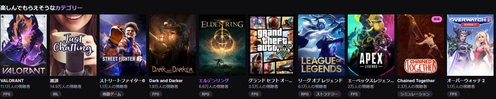

配信の探し方
Twitchタグ・カテゴリーの活用
ゲーム配信をみたい人におすすめ
Twitchはホーム画面からゲームのタイトルや配信カテゴリーで絞り込めます。またそのゲームの総視聴者数が見れるためどのゲームがTwitchの中での人気度がわかります。
Youtubeアーカイブや切り抜き動画
YoutubeはアーカイブがTwitchと違って無期限での残ります。そのため、やっているゲームやどんなチャンネルなのかを投稿動画やアーカイブから確認できます。 また、ファンが作成した配信者のアーカイブ切り抜き動画がここ数年流行っており、面白い部分やみんなが見たいような場所を切り取ってテロップやBGMといった編集を加えたうえで 投稿するため、短くまとめられています。切り抜き動画は時間がない人二おすすめの探し方です。
X(ハッシュタグ)機能の活用
新人やこれから配信を始める人が知りたい人
「X」（旧ツイッター）は世界中で3億人以上のユーザーに使われています。10代～20代の若年層のユーザーが多いです。XはVtuber・Vライバーを探すのに適していると言えます。 Vtuberがデビューする際は、YoutubeアカウントとXアカウントの2つを基本的に開設しデビュー日などはXで公開することが多いです。また「#(ハッシュタグ)」を用いた検索をかけることで これからデビューするであろう配信者を探すことができます。